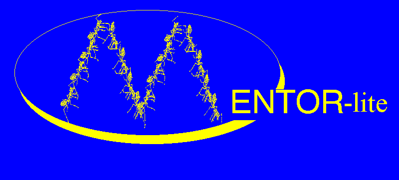
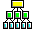
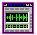
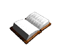

The Mentor-lite Project:
| Head: | Gerhard Weikum | (weikum@cs.uni-sb.de) |
| Team Members: | Michael Gillmann | (gillmann@cs.uni-sb.de) |
| Peter Muth | (muth@cs.uni-sb.de) | |
| German Shegalov | (shegalov@cs.uni-sb.de) | |
| Jeanine Weissenfels | (weissenfels@cs.uni-sb.de) | |
| Wolfgang Wonner | (wonner@cs.uni-sb.de) | |
 |
System Overview. | |
 |
Auto-Configuration of Distributed WFMS. | |
| Demo. |
The Database and Information Systems Research Group
at the University of the Saarland (external links):
 |
Publications. | |
| Homepage. |